Chapter 8 Tree Regression Models
In this chapter, we will discuss predicting a continuous response via tree based methods.
8.1 Basic Regression Trees
In a basic regression tree, we build a tree which determines our prediction for new data. For example, suppose we have the tree pictured below.
library(igraph)
my_tree <- igraph::make_tree(5)
plot(my_tree,
layout = layout_as_tree,
edge.label = c("x > 1","x <= 1","y > 2", "y <= 2"),
vertex.label = c("","", 12, 17, 22))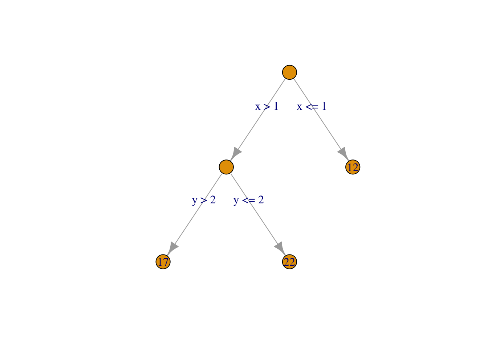
Here I am imagining that I have at least two predictors, which are named x and y, and I have a response. If new data comes in with \(x = 1.5\) and \(y = 1.5\), then we first look to see whether \(x > 1\) or \(x \le 1\). Since it is bigger than 1, we go to the left. Now, we check whether \(y > 2\) or \(y \le 2\). Since it is less than or equal to 2, we go to the right. We then predict the response based on the leaf that we arrive at. In this case, our prediction would be 22.
The million dollar question is, though, how do we come up with a good tree? Well, what we are going to do is go through every single predictor, and split the data into every possible set of two groups based on a simple rule like \(x > a\) versus \(x \le a\). Since our predictions are going to be constants (for now) on each split, we hope that the split will make the sum-squared error of the responses in the two groups as small as possible. There are other possible techniques that one could use. Let’s see it in action with simulated data.
set.seed(32120)
for_tree <- data.frame(x = runif(100, 0, 10),
y = rexp(100, 1/5))
for_tree$response <- ifelse(for_tree$x > 7, rnorm(100, 1,1), rnorm(100, 5,1))
for_tree$response <- ifelse(for_tree$x < 7 & for_tree$y < 4, for_tree$response + 7, for_tree$response)This simulated data will have response values centered about 5 if \(x < 7\) and \(y \ge 4\), and it will have response values centered about 1 when \(x > 7\).
Now, let’s start building our tree. We will need to loop through all possible splits based on the \(x\) variable and the \(y\) variable separately, and compute the sum of the sample variances of the two.
xs <- for_tree$x
x1 <- xs[1]
for_tree %>% group_by(x > x1) %>%
summarize(sse = sum((response - mean(response))^2),
n = n()) ## # A tibble: 2 × 3
## `x > x1` sse n
## <lgl> <dbl> <int>
## 1 FALSE 349. 30
## 2 TRUE 1610. 70We start by splitting into bigger than \(x1\) and less then or equal to \(x1\). We see that the SSE associated with being less than \(x1\) is smaller than the other, but there are also a lot fewer values associated with \(x \le x1\).
Now, we need to sum the SSE:
for_tree %>% group_by(x > x1) %>%
summarize(sse = sum((response - mean(response))^2),
n = n()) %>%
pull(sse) %>%
sum()## [1] 1959.031Then, we repeat for all values of \(x\).
sse_x <- sapply(xs, function(x1) {
for_tree %>% group_by(x > x1) %>%
summarize(sse = sum((response - mean(response))^2),
n = n()) %>%
pull(sse) %>%
sum()
})
min(sse_x)## [1] 846.4017Then, we do the same thing for all values of \(y\), which is an exercise in the R Markdown sheet.
## [1] 1504.796When you compute the SSE for the \(y\) splits, you should get the smallest to be 1504.7955004, which is larger than the smallest \(x\) split. Therefore, we would split on \(x\). Which one?
## [1] 26## x y response
## 26 6.963177 2.305067 12.49659So, we would split it into \(x > 6.963177\) and \(x \le 6.963177\). There would be 68 and 32 observations in the two groups after splitting. Let’s also plot the SSE for the various splits in the \(x\) variable.
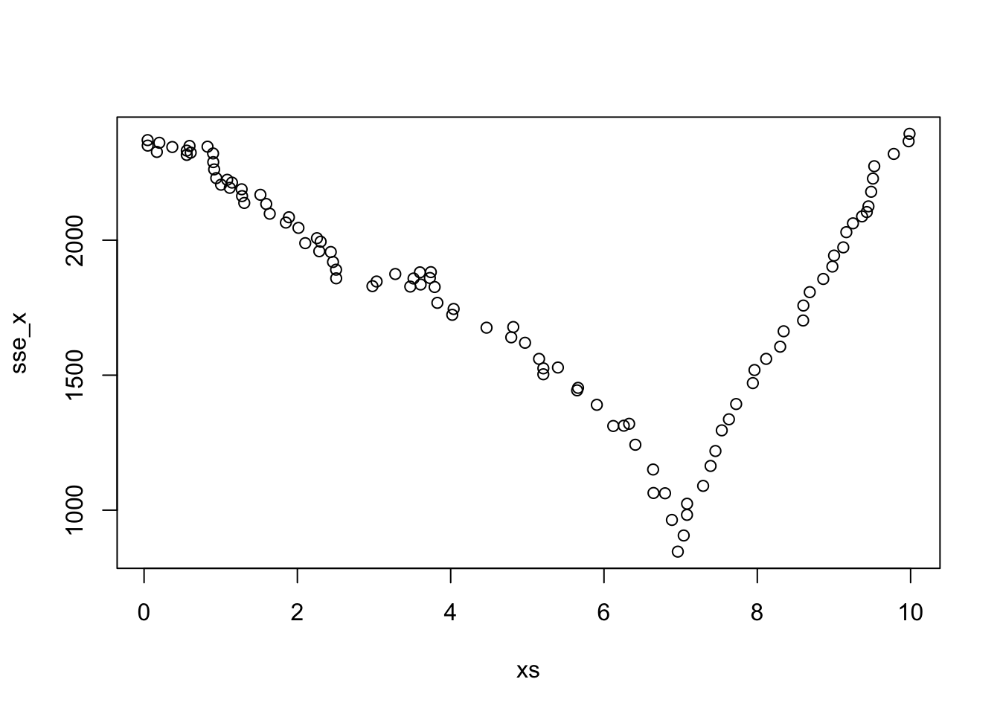
Based on this one split, our predictions for new data coming in would be as follows. If \(x > 6.963177\), we would predict the response to be 1.07, and if \(x \le 6.963177\), we would predict the response to be 9.5. These values are the means of the responses after the split. Recall from above that response values are centered about 1 when \(x > 7\), so this is a pretty good estimate already in that case!
## # A tibble: 2 × 2
## `x > 6.963177` prediction
## <lgl> <dbl>
## 1 FALSE 9.51
## 2 TRUE 1.07We know, based on how the data was created, that we should now stop creating the tree. However, the algorithm would continue splitting the data into data into two pieces until it reaches a minimum number of observations in a node. Typically, we require at least 20 observations in a leaf to consider splitting further, and we require the splits to have at least \(N/3\) observations in each split. Once all of the leaves are built, we are done.
It seems clear that the basic regression tree will often overfit the data. In order to combat that, we will add one more level of complexity to the situation. Namely, we will add a penalty for the number of leaves in the model. Formally, at each proposed split, we would compute
\[ SSE + c_p \times \#\{\text{leaves in model}\} \]
We will only proceed with a split if the penalized measure of performance decreases. The value \(c_p\) is called the complexity parameter, and is chosen via cross validation. As usual, you can choose the value of \(c_p\) that minimizes the SSE, or you can choose the largest value of \(c_p\) that yields an SSE within one standard error of the best \(c_p\). If you choose the one standard error version, then your model will be simpler and perhaps easier to interpret.
We will not code this up by hand, but rather see how to use the package rpart to do this.
library(rpart)
mod_Tree <- rpart(response ~ x + y,
data = for_tree,
control = rpart.control(cp = 0))
mod_Tree## n= 100
##
## node), split, n, deviance, yval
## * denotes terminal node
##
## 1) root 100 2394.015000 6.8090490
## 2) x>=7.001606 32 24.004220 1.0743490
## 4) x>=9.439387 7 5.418916 0.6045054 *
## 5) x< 9.439387 25 16.607360 1.2059050
## 10) x< 8.920044 18 10.381580 1.0838220 *
## 11) x>=8.920044 7 5.267642 1.5198330 *
## 3) x< 7.001606 68 822.397500 9.5077320
## 6) y>=3.777924 24 16.070500 4.9400120
## 12) y< 8.772627 14 10.086350 4.7490080 *
## 13) y>=8.772627 10 4.758340 5.2074170 *
## 7) y< 3.777924 44 32.459780 11.9992200
## 14) y< 1.24562 19 8.858175 11.6249900 *
## 15) y>=1.24562 25 18.918450 12.2836300
## 30) y>=2.308866 8 2.342445 11.8080800 *
## 31) y< 2.308866 17 13.915520 12.5074100 *## x y
## 1552.2841 879.2994## CP nsplit rel error xerror xstd
## 1 0.6464509968 0 1.00000000 1.01904205 0.05955977
## 2 0.3232507416 1 0.35354900 0.41892657 0.06377887
## 3 0.0019561889 2 0.03029826 0.08769604 0.05333872
## 4 0.0011113084 3 0.02834207 0.08985749 0.05332416
## 5 0.0008262048 4 0.02723076 0.08700286 0.05177234
## 6 0.0005120325 5 0.02640456 0.09115297 0.05177279
## 7 0.0004002201 6 0.02589253 0.09300489 0.05175867
## 8 0.0000000000 7 0.02549231 0.09229197 0.05058935## n= 100
##
## node), split, n, deviance, yval
## * denotes terminal node
##
## 1) root 100 2394.015000 6.8090490
## 2) x>=7.001606 32 24.004220 1.0743490
## 4) x>=9.439387 7 5.418916 0.6045054 *
## 5) x< 9.439387 25 16.607360 1.2059050
## 10) x< 8.920044 18 10.381580 1.0838220 *
## 11) x>=8.920044 7 5.267642 1.5198330 *
## 3) x< 7.001606 68 822.397500 9.5077320
## 6) y>=3.777924 24 16.070500 4.9400120
## 12) y< 8.772627 14 10.086350 4.7490080 *
## 13) y>=8.772627 10 4.758340 5.2074170 *
## 7) y< 3.777924 44 32.459780 11.9992200
## 14) y< 1.24562 19 8.858175 11.6249900 *
## 15) y>=1.24562 25 18.918450 12.2836300
## 30) y>=2.308866 8 2.342445 11.8080800 *
## 31) y< 2.308866 17 13.915520 12.5074100 *Now, let’s do Cross Validation to determine the best regression tree for minimizing SSE. We’ll again use repeated 10-fold CV.
library(caret)
tuneGrid <- data.frame(cp = mod_Tree$cptable[,1])
basic_tree_cv <- train(response ~ x + y,
data = for_tree,
method = "rpart",
tuneGrid = tuneGrid,
trControl = trainControl(method = "repeatedcv",
repeats = 5)
)
basic_tree_cv$results## cp RMSE Rsquared MAE RMSESD RsquaredSD MAESD
## 1 0.0000000000 1.213430 0.9217543 0.8953456 0.8754000 0.1415938 0.3646342
## 2 0.0004002201 1.205608 0.9221461 0.8892738 0.8725662 0.1414442 0.3597052
## 3 0.0005120325 1.200718 0.9221940 0.8860438 0.8810468 0.1425634 0.3644045
## 4 0.0008262048 1.184050 0.9231787 0.8669791 0.8861990 0.1432461 0.3616212
## 5 0.0011113084 1.173554 0.9242115 0.8550895 0.8942595 0.1436001 0.3584810
## 6 0.0019561889 1.172340 0.9246957 0.8505300 0.8909070 0.1432200 0.3594802
## 7 0.3232507416 2.283368 0.7218413 1.8284694 1.3209655 0.2468263 1.0313152
## 8 0.6464509968 4.151103 0.5268897 3.7052617 0.9997554 0.1431459 1.1084478The smallest RMSE was when cp = 0.0019561889, and there is a simpler model just barely within one standard error of our estimate for the RMSE with that value of cp = 0.3232507416. The previous statement depends on which run of the cross-validation that we do! If you re-run, sometimes the simpler model is within one sd, and sometimes it is not. Let’s re-run rpart with both values.
mod_Tree <- rpart(response ~ x + y,
data = for_tree,
control = rpart.control(cp = 0.0019561889))
mod_Tree## n= 100
##
## node), split, n, deviance, yval
## * denotes terminal node
##
## 1) root 100 2394.015000 6.809049
## 2) x>=7.001606 32 24.004220 1.074349 *
## 3) x< 7.001606 68 822.397500 9.507732
## 6) y>=3.777924 24 16.070500 4.940012 *
## 7) y< 3.777924 44 32.459780 11.999220
## 14) y< 1.24562 19 8.858175 11.624990 *
## 15) y>=1.24562 25 18.918450 12.283630 *We see that this model overfits the true model a bit, by adding one additional split than what we know the true model had. The simpler model that is the one within one sd of the best one fits almost exactly how we created the data.
mod_Tree <- rpart(response ~ x + y,
data = for_tree,
control = rpart.control(cp = 0.3232507416))
mod_Tree## n= 100
##
## node), split, n, deviance, yval
## * denotes terminal node
##
## 1) root 100 2394.01500 6.809049
## 2) x>=7.001606 32 24.00422 1.074349 *
## 3) x< 7.001606 68 822.39750 9.507732 *Huh, this one actually is too small. The automated picking of cp isn’t working quite right, so if we add a complexity parameter of 0.03 into the training mix, we see that it works better than any of the other complexity parameters.
tuneGrid <- data.frame(cp = c(tuneGrid$cp, .03))
basic_tree_cv <- train(response ~ x + y,
data = for_tree,
method = "rpart",
tuneGrid = tuneGrid,
trControl = trainControl(method = "repeatedcv",
repeats = 5)
)
basic_tree_cv$results## cp RMSE Rsquared MAE RMSESD RsquaredSD MAESD
## 1 0.0000000000 1.215654 0.9210948 0.8940887 0.8467115 0.1433475 0.3505427
## 2 0.0004002201 1.209871 0.9212856 0.8889472 0.8444461 0.1432304 0.3452945
## 3 0.0005120325 1.199602 0.9220114 0.8806105 0.8443763 0.1431928 0.3458358
## 4 0.0008262048 1.184323 0.9233355 0.8681736 0.8475409 0.1425037 0.3450186
## 5 0.0011113084 1.176890 0.9243609 0.8580574 0.8522202 0.1412287 0.3330814
## 6 0.0019561889 1.163948 0.9249228 0.8507167 0.8587779 0.1411014 0.3397056
## 7 0.0300000000 1.142665 0.9265220 0.8243669 0.8607087 0.1406256 0.3293990
## 8 0.3232507416 2.161433 0.7412805 1.7634824 1.3601114 0.2570871 1.0739951
## 9 0.6464509968 4.243271 0.5092443 3.8054918 0.9147815 0.1566346 1.0194488And we see that cp = .03 is the best, and it also leads to the correct model.
## n= 100
##
## node), split, n, deviance, yval
## * denotes terminal node
##
## 1) root 100 2394.01500 6.809049
## 2) x>=7.001606 32 24.00422 1.074349 *
## 3) x< 7.001606 68 822.39750 9.507732
## 6) y>=3.777924 24 16.07050 4.940012 *
## 7) y< 3.777924 44 32.45978 11.999220 *8.2 Regression Model Trees
In the previous section, we split the data into pieces and approximated each piece by a single constant. One downside to this is that, within a leaf, it is likely that the response is not constant with respect to the predictors, but in fact depends on the predictors. In this section, we will see one way to better approximate data of this type. The basic idea is that we will use a linear model to predict the response at each node (not just each leaf), where the model is built on all of the variables that we used to split to get down to that node. Then, we will predict the response based on a weighted average of each node that the new data visits to get to the leaf! That’s a lot to take in.
Let’s break things down into component pieces. We’ll create a synthetic data set so that we know what the true model is.
set.seed(3312020)
dd <- data.frame(x = runif(1000, 0, 10),
y = rexp(1000, 1/5))
dd <- mutate(dd, response = case_when(
x > 5 & y > 5 ~ x + y + 1,
x > 5 & y <= 5 ~ 2 * x + 1,
x <= 5 & y > 7 ~ 10 * x + 20 * y,
TRUE ~ 7
) + rnorm(1000))We’ll plot this to see what it looks like:
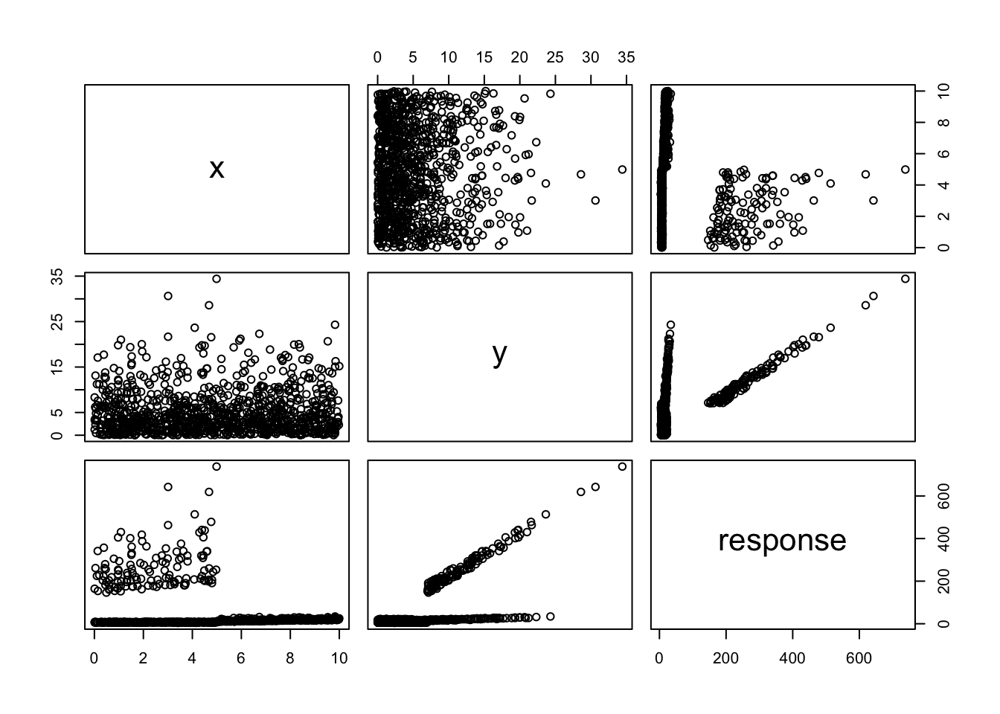
We can see that there are several things going on! Let’s see what the relationship looks like when \(x > 5\) and \(y > 5\).
##
## Call:
## lm(formula = response ~ ., data = filter(dd, x > 5, y > 5))
##
## Residuals:
## Min 1Q Median 3Q Max
## -3.06037 -0.65030 -0.02971 0.69403 2.13172
##
## Coefficients:
## Estimate Std. Error t value Pr(>|t|)
## (Intercept) 1.12573 0.41936 2.684 0.00796 **
## x 1.05156 0.05198 20.231 < 2e-16 ***
## y 0.97552 0.01692 57.658 < 2e-16 ***
## ---
## Signif. codes: 0 '***' 0.001 '**' 0.01 '*' 0.05 '.' 0.1 ' ' 1
##
## Residual standard error: 0.9595 on 177 degrees of freedom
## Multiple R-squared: 0.9574, Adjusted R-squared: 0.9569
## F-statistic: 1988 on 2 and 177 DF, p-value: < 2.2e-16We see that when \(x > 5\) and \(y > 5\), we get estimates for the coefficients for \(x\) and \(y\) to be \(1.05\) and \(0.98\) respecitvely. These are approximately equal to the true values for the generative process of the data, which are 1 and 1. Of course, in general, we won’t know what the generative process of the data is, and we won’t even know that the data was created by a process of this type at all.
The overview of the algorithm for splitting is:
- We start by building a model on all of the predictors and all of the observations.
- We determine which, if any, of the variables is the most likely candidate to split on. This is a major difference between this algorithm and the basic regression tree algorithm.
- We test every split on the determined variable (into two nodes of sufficient size), to see which one has the smallest total sum squared error after refitting the OLS on each node separately.
- We split the data into the sets determined in 3, and repeat for each current leaf in the tree.
8.2.1 Choosing Variable to Split
The basic idea for splitting the data set (i.e., items 1 and 2 in the algorithm presented above) is the same as for the basic regression tree. However, we will need to modify the criterion we are using to choose the best split. A natrual choice would be to build a linear model at each split and compute the total residual squared error. We will use a technique similar to one described by Zeileis, Hothorn, and Hornik that tries to accomplish this goal in an efficient fashion.
We assume for simplicity that we are using all of the predictors for both the splitting of the data and for the model building at each node.
We start by building an OLS model on the full data. I’m also going to change the names of the predictors in dd, because it may be confusing that y is a predictor. Sorry about that.
names(dd) <- c("V1", "V2", "response")
mod_full <- lm(response ~ .,data = dd)
dd_full <- mutate(dd,
residuals = mod_full$residuals)Now, we need to decide which of the two variables, if either, is more suitable for splitting. The idea proposed by Zeileis, et al, is to check for parameter instability in each variable, and to choose the variable that has the highest parameter instability. They also provide a method for determining parameter instability, but it would be a bit of a detour from the main thrust of this section. So, we will use a simpler method based on the residuals of the full OLS model.
First, note that the mean of the residuals in the full OLS model is zero.
## [1] -1.421085e-16Now, if there is not a natural split in the variable x, say, then if we sort the residuals according to the values of x, then they should look more or less like random fluctuations about 0. Let’s separately look at a data set for which there is not a split to see what that looks like.
dd_no_split <- data.frame(V1 = runif(1000, 0, 10),
V2 = rexp(1000, 1/5))
dd_no_split <- mutate(dd_no_split, response = 1 + 2 * V1 + 3 * V2 + rnorm(1000))
mod_no_split <- lm(response ~ ., data = dd_no_split)
dd_no_split <- mutate(dd_no_split,
residuals = mod_no_split$residuals)So, to be clear, dd_no_split should not be further split, while dd should be split.
Let’s plot the residuals of the data that needs splitting, after ordering by V1.
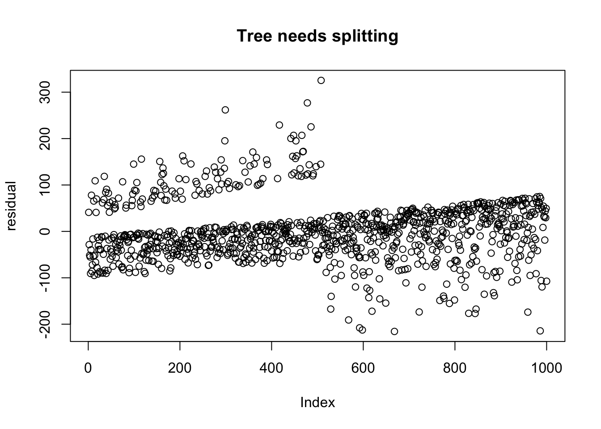
arrange(dd_no_split, V1) %>%
pull(residuals) %>%
plot(ylab = "residual", main = "Tree does not need splitting")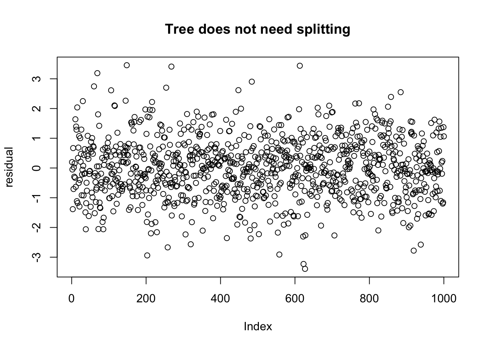
We can see that after ordering the residuals by V1, that there is a definite difference in the residuals. But what makes the one more amenable to splitting than the other? And how can we automate the procedure to find if and which variable to choose?
We will take the cumulative sum of the residuals, after they have been standardized. We will first do this multiple times for the data that does not need to be split further so that you can see what types of results to expect.
sdev <- sd(dd_no_split$residuals)
dd_no_split$cumulative_sum <- arrange(dd_no_split, V1) %>%
pull(residuals) %>%
cumsum()
dd_no_split$cumulative_sum <- dd_no_split$cumulative_sum/(sdev * sqrt(nrow(dd_no_split))) As you can see in the above code, we computed the cumulative sum of the residuals, after ordering the data by V1. We then normalized the cumulative sum by dividing by the standard deviation of the residuals and dividing by the square root of the number of observations. Now, we plot:
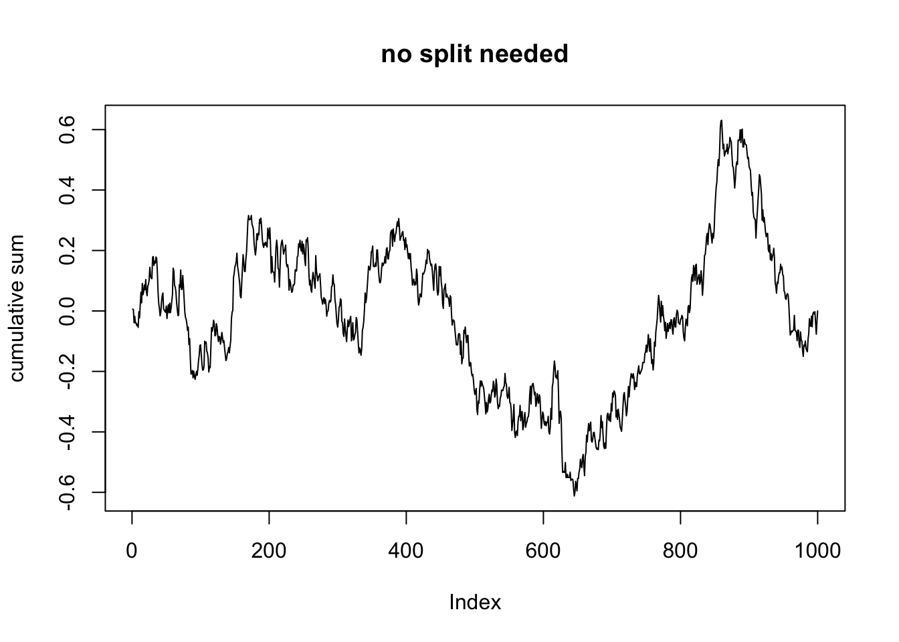
In this plot, we see that the largest value of the normalized cumulative sum is about 0.6, and the smallest value is about -0.6.
## [1] 0.6306199## [1] -0.6121042Now, let’s see what happens when we do the data that needs further splitting.
sdev <- sd(dd_full$residuals)
dd_full$cumulative_sum <- arrange(dd_full, V1) %>%
pull(residuals) %>%
cumsum()
dd_full$cumulative_sum <- dd_full$cumulative_sum/(sdev * sqrt(nrow(dd_full)))
plot(dd_full$cumulative_sum, type = "l",
ylab = "cumulative sum",
main = "yes split needed",
sub = "ordered by V1")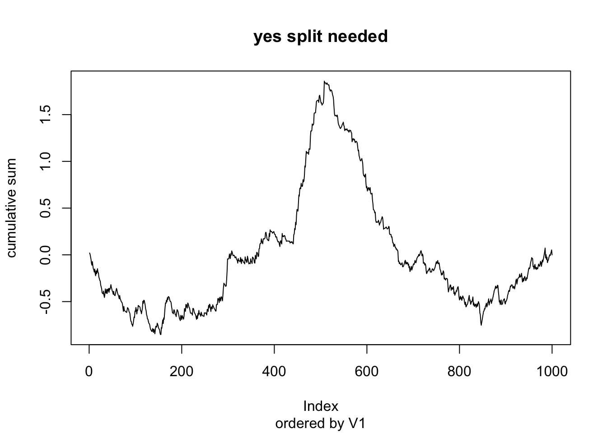
We see in this case that the cumulative sum has a maximum value of 1.858, which is highly unlikely to happen if the model is already fully specified.
This procedure is automated in R in the package strucchange. In order to use this, we will need to sort the data by the separate variables first, and then apply the function efp.
library(strucchange)
dd_v1 <- arrange(dd, V1)
qcc_test <- efp(response ~ ., data = dd_v1, type = "OLS-CUSUM")
plot(qcc_test)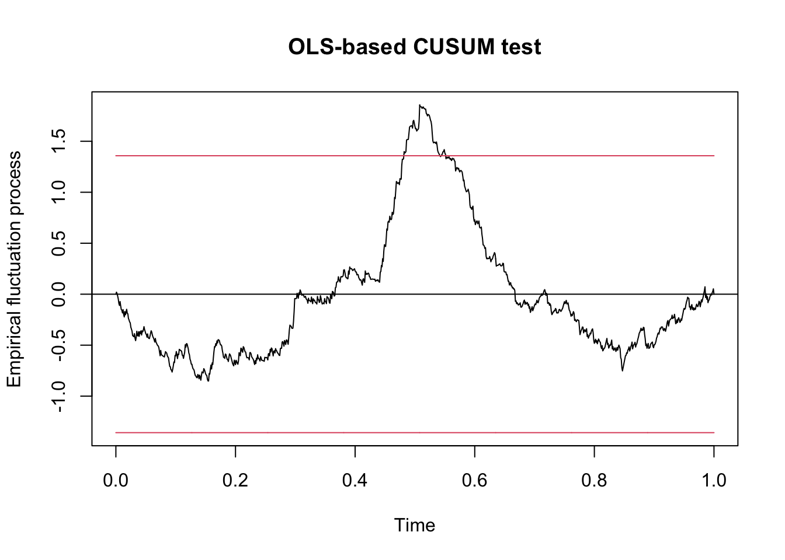
##
## OLS-based CUSUM test
##
## data: qcc_test
## S0 = 1.8563, p-value = 0.002033We see that we would reject the null hypothesis that the residuals are centered around zero after arranging them according to V1 with \(p = .002\). In particular, since this value is less than \(\alpha = .05\), we conculde that we do need to continue splitting. We will continue splitting as long as any of the \(p\)-values that we compute are below the threshold \(\alpha\) that we choose.
The test statistic is the largest absolute deviation away from zero in the cumulative sum or residuals.
dd_v2 <- arrange(dd, V2)
qcc_test_2 <- efp(response ~ ., data = dd_v2, type = "OLS-CUSUM")
plot(qcc_test_2)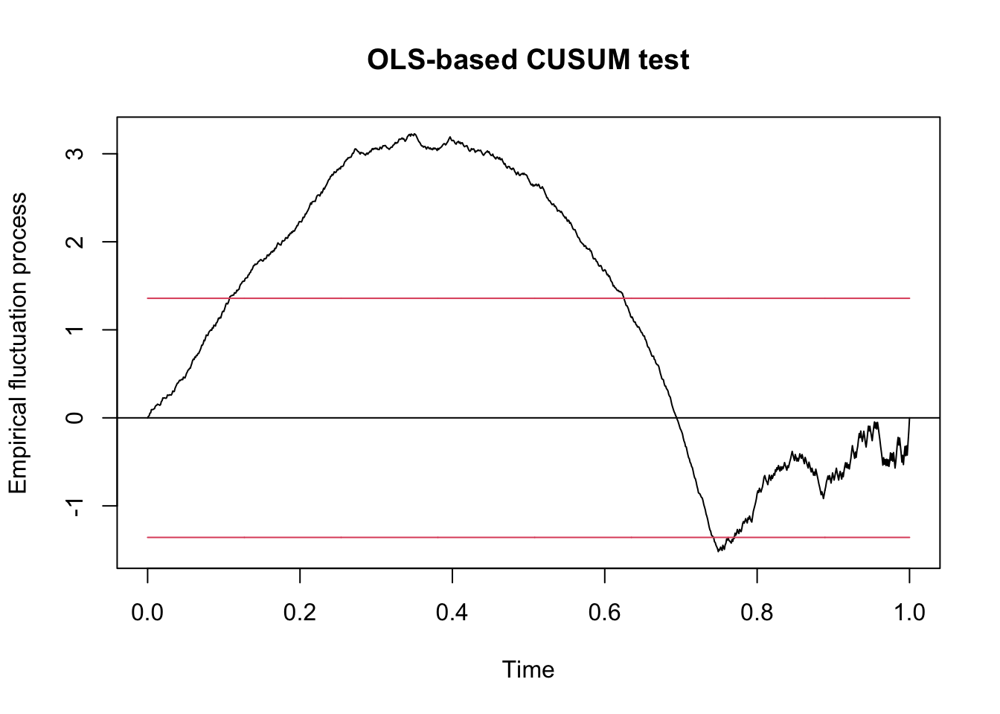
##
## OLS-based CUSUM test
##
## data: qcc_test_2
## S0 = 3.2267, p-value = 1.809e-09We see that the model is more unstable with respect to the parameter V2 than it was to the parameter V1, and it also has a much lower \(p\)-value. Based on this, we would first split on V2. One final note, if we have a many predictors, it is a good idea to apply a correction factor to the \(p\)-values that you get. A typical choice would be to multiply each \(p\)-value by the number of predictors that are in the model, which is called a Bonferroni correction. Alternatively, and probably preferably, we could use the \(\alpha\) level of the test as a tuning parameter to be determined by cross validation.
8.2.1.1 How does efp work?
In this section, we briefly describe how the efp function works, and how the \(p\)-values in sctest are computed. Assume the data is generated by \(y = \beta_0 + \sum \beta_i x_i + \epsilon\), where \(\epsilon\) is normal with mean 0 and standard deviation \(\sigma\). In this case, as we have seen before, the residuals will be normal, with mean 0 and estimated standard deviation
\[
\frac{1}{n - k - 1}\sum_{i = 1}^n \hat \epsilon_i ^2
\]
where \(k\) is the number of predictors, \(n\) is the number of observations, and \(\hat \epsilon_i\) is the observed residual.
Just a quick check:
dd_efp <- data.frame(v1 = runif(10),
v2 = runif(10))
dd_efp <- mutate(dd_efp,
response = 1 * v1 + 2 * v2 + rnorm(10, 0, 3))
mod <- lm(response ~ ., data = dd_efp)
sqrt(sum(mod$residuals^2)/7)## [1] 1.802707##
## Call:
## lm(formula = response ~ ., data = dd_efp)
##
## Residuals:
## Min 1Q Median 3Q Max
## -2.5966 -0.7937 0.1819 0.8283 2.8906
##
## Coefficients:
## Estimate Std. Error t value Pr(>|t|)
## (Intercept) 6.4821 2.6531 2.443 0.0445 *
## v1 -9.4338 3.4395 -2.743 0.0288 *
## v2 0.8207 2.1210 0.387 0.7103
## ---
## Signif. codes: 0 '***' 0.001 '**' 0.01 '*' 0.05 '.' 0.1 ' ' 1
##
## Residual standard error: 1.803 on 7 degrees of freedom
## Multiple R-squared: 0.6696, Adjusted R-squared: 0.5752
## F-statistic: 7.094 on 2 and 7 DF, p-value: 0.02073Note that our computation matches the residual standard error. And to see that they are normal:
dd_efp <- data.frame(v1 = runif(1000),
v2 = runif(1000))
ddd_efp <- mutate(dd_efp,
response = 1 * v1 + 2 * v2 + rnorm(1000, 0, 3))
mod <- lm(response ~ ., data = ddd_efp)
shapiro.test(mod$residuals)##
## Shapiro-Wilk normality test
##
## data: mod$residuals
## W = 0.99814, p-value = 0.3475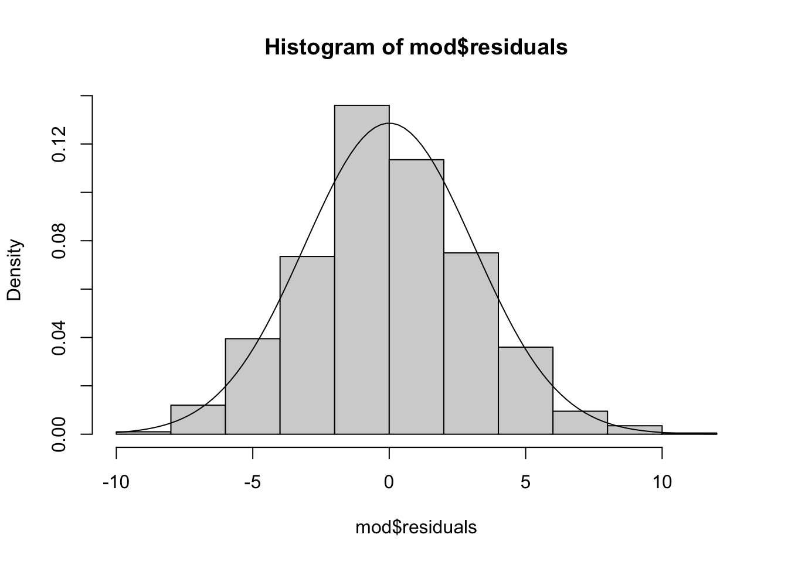
So, under the assumption of our model, the residuals are independent normal rv’s with mean 0 and standard deviation estimated as above. Now, we also assume that they are independent of the predictors. After re-ordering the data in terms of one of the predictors, we compute the cumulative sum of the residuals, which are normal. The residuals are not a random sample from normals, however, because they by necessity sum to zero. So, we are interested in is understanding the behaviour of the cumulative sum of normal random variables that sum to zero as their only dependence. In particular, we are interested in knowing how big of a deviation away from zero would we normally expect. For googling purposes, note that this sort of process is known as a Brownian bridge when the number of observations goes to infinity.
In order to sample from a Brownian bridge, we will use our own implementation of the rbridge function from the e1071 library.
Here is an example:
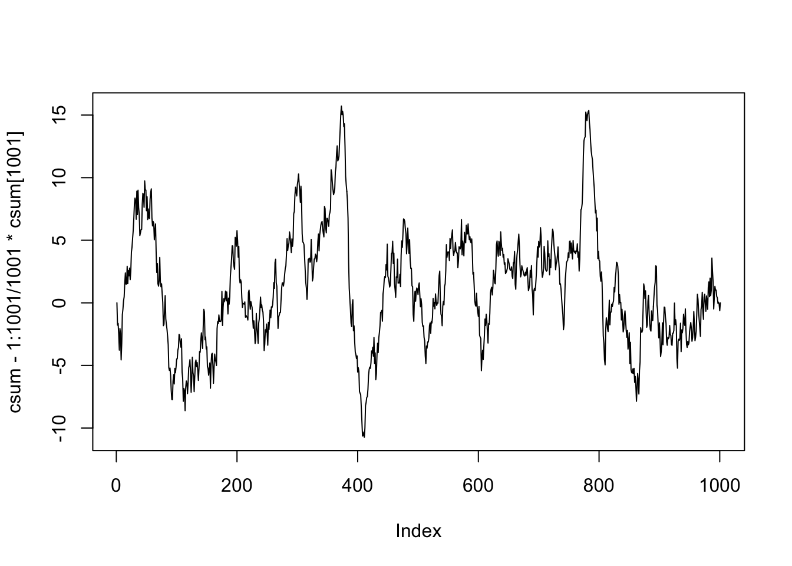
Now, we examine the dependence of the maximum value of the absolute value of the cumulative sum of the residuals on the number of observations.
Ns <- ceiling(seq(10, 10000, length.out = 50))
maxs <- sapply(Ns,
function(N) {sim_data <- replicate(500, {
csum <- c(0, cumsum(rnorm(N)))
max(abs(csum - 1:(N+1)/(N+1) * csum[N+1]))
})
quantile(sim_data, .975)
})
plot(Ns, maxs)
curve(1.5 * sqrt(x), add = T)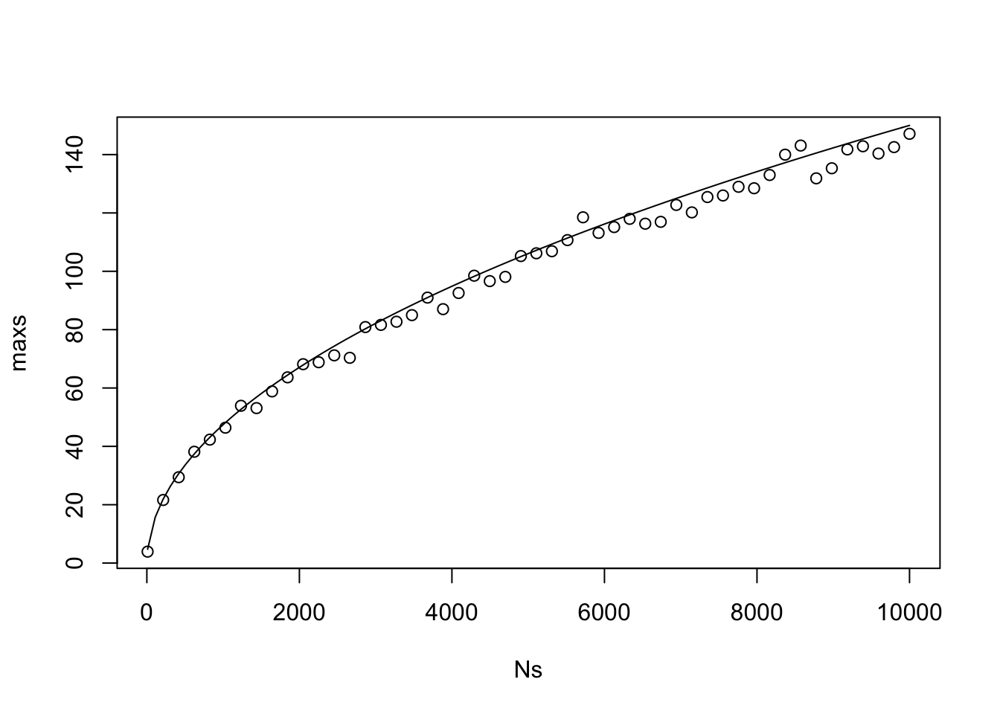
As we can see, the 97.5 percentile of the maximum of the absolute value of the cumulative sum of \(N\) normal rvs that sum to zero is proportional to \(\sqrt{N}\), where the constant of proportionality is about 1.5, which was discovered via trial and error. If we change it to the 95th percentile, then it is still proportional to \(\sqrt{N}\), but the constant changes to 1.35.
maxs <- sapply(Ns,
function(N) {sim_data <- replicate(500, {
csum <- c(0, cumsum(rnorm(N)))
max(abs(csum - 1:(N+1)/(N+1) * csum[N+1]))
})
quantile(sim_data, .95)
})
plot(Ns, maxs)
curve(1.35 * sqrt(x), add = T)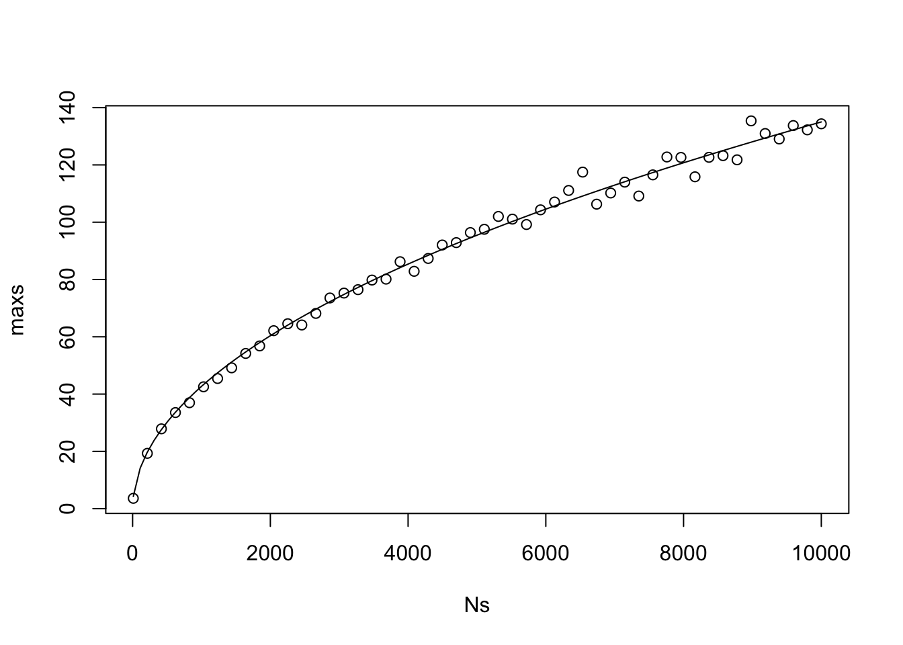
If the standard deviation of the random variables that we are summing is changed, then we would start by dividing everything by that standard deviation, and get the same plot.
Therefore, we can see why the strucchange::efp takes the residuals and divides by the square root of the number of observations and the estimated standard deviation. The distribution of the maximum of the resulting values does not depend on the number of observations or the underlying standard deviation, so we would need to do a one-time estimate of the quantiles of this distribution in order to compute \(p\)-values and do hypothesis testing. For example, to estimate the value of the test statistic (that is, the maximum of the absolute value of the cumulative sums), we could simulate the maximu values when \(N = 100\) and the rest will be the same.
N <- 500
sim_data <- replicate(30000, {
csum <- c(0, cumsum(rnorm(N))/sqrt(N))
max(abs(csum - 1:(N+1)/(N+1) * csum[N+1]))
})
quantile(sim_data, .95)## 95%
## 1.330189Since this is a one-sided test, the critical value for the test statistic at the \(\alpha = .05\) level is about 1.3. The critical value at the \(\alpha = .002\) level is about 1.8. Note that the actual value of the test statistic when \(p = .002033\) in the example above was 1.856, which matches this simulation pretty well, though not exactly. I will point out that as \(N\) grows, our estimate below seems to get closer to the correct value, but it still has quite a bit of variation.
## 99.8%
## 1.8170348.2.2 Choosing Split Value
Now that we have decided that we want to split on V2, we want to figure out the level of the split. We will want to make sure that there are at least 20 observations in each node (that shouldn’t be hard, since there are 1000 observations total!). Our plan is to split on each possible value of V2, build a new model for each of the split data sets, find the residual SSE for each of the residual sets separately and then add them together.
sse_splits <- sapply(21:979, function(x) {
ds1 <- dd_v2[1:x,]
ds2 <- dd_v2[(x + 1):1000,]
mod1 <- lm(response ~ ., data = ds1)
sse1 <- sum(mod1$residuals^2)
mod2 <- lm(response ~ ., data = ds2)
sse2 <- sum(mod2$residuals^2)
sse1 + sse2
})
plot(sse_splits, type = "l")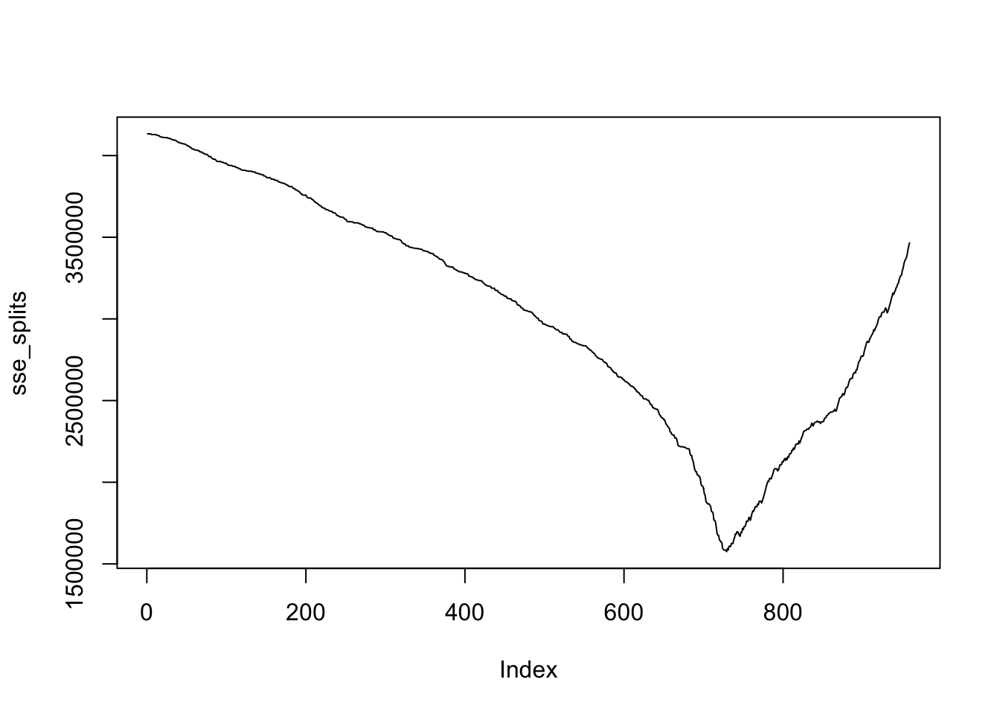
We see that there is a pretty clear winner where we should be splitting thigs. Let’s find the value.
## [1] 6.945864We see that the split should be \(V2 \le 6.945864\) versus \(V2 > 6.945864\). Note that this is the largest value of \(V2\) which is less than 7, and we know that 7 is a correct value to split on, because of how the data was generated! Yay!
Now, we have a tree with two leaves. One leaf corresponds to \(V2 < 7\) and the other leaf corresponds to \(V2 \ge 7\). We would then need to build linear models of the response on the predictors on both of those leaves, and that would be our model after one split.
left_dd <- filter(dd, V2 < 7)
right_dd <- filter(dd, V2 > 7)
lef_mod <- lm(response ~ V2, data = left_dd)
lef_mod##
## Call:
## lm(formula = response ~ V2, data = left_dd)
##
## Coefficients:
## (Intercept) V2
## 11.649 -0.131##
## Call:
## lm(formula = response ~ V2, data = right_dd)
##
## Coefficients:
## (Intercept) V2
## -25.60 14.07This is our current model. Note that it is not correct for either leaf, because when \(V2 > 7\) and \(V1 > 5\), the response is just 7, while when \(V2 > 7\) and \(V1 \le 5\), the response is \(10V1 + 20V2\). When \(V2 < 7\), we will need to further split as well. If new data came in with \(V1 = 4\) and \(V2 = 8\), our prediction for the response would be
## 1
## 86.93444## [1] 86.96As an exercise, you are asked to repeat the variable selection, split, and model building on the left node; that is, when \(V2 < 7\).
8.2.3 Predicting values (Smoothing)
In this last section, we show how to make predictions using smoothing, combining the predictions that were made in the nodes up to this point. Once you have built your tree so that all of the leaves either
- have a number of observations small enough that you do not want to further split or
- don’t meet the \(\alpha\) level required to reject the null that the parameters are stable
then you are ready to make your predictions! First, for each node in the tree (not just the leaves), we have a model associated with that node that is based on all of the variables used to split to get down to that node. We create a prediction of the response for each node in the path that the data takes to get to a leaf. Then, we take a weighted average of the predictions to get our final prediction.
For example, suppose we have the following tree.
my_tree <- igraph::make_tree(5)
plot(my_tree,
layout = layout_as_tree,
edge.label = c("V1 < 1","V1 >= 1","V2 < 2", "V2 >= 2"),
vertex.label = c("1","2", "3", "4", "5"))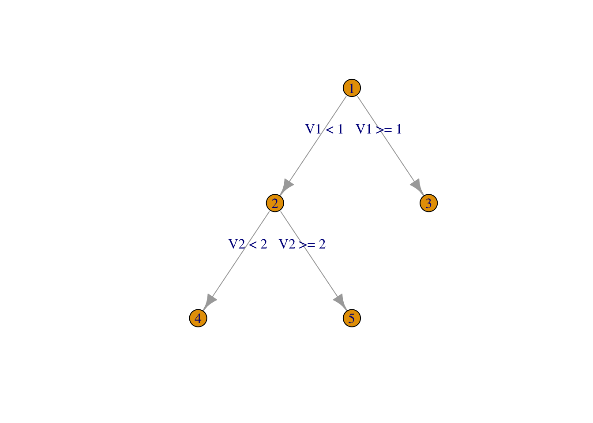
We suppose that the model associated with node 2 is \(y = 2 + V1\), and the model associated with node 5 is \(y = -1 + 2 V1 - V2\). We also assume that we have 60 observations in node 2, and 25 observations in node 5.
Let’s suppose we get new data in with values \(V1 = -1\) and \(V2 = 3\). Our prediction in node 5 (the leaf) would be \(-1 + 2(-1) - 3 = -6\).
To get our prediction in node 2 would use the formula
\[ \hat y = \frac{n \hat y_{child} + c \hat y_{parent}}{n + c} \]
where \(n\) is the number of observations in the child node, \(c\) is a tuning parameter often chosen to be 15, \(\hat y_{child}\) is the prediction in the child node, and \(\hat y_{parent}\) is the prediction from the model in the parent node.
In this case, our prediction would be
\[ \frac{25 \times (-6) + 15 \times 1}{25 + 15} = -1.625 \]
If there were further nodes above, we would continue with our prediction here as \(\hat y_{child}\) and \(n = 50\), while keeping \(c = 15\). As you see, as the number of observations increases, the relative weight of the leaf is increased.
8.2.4 Using R functions
As you can imagine, there are packages that do this for us! Different packages implement different aspects of what was described above. The one suggested in our textbook is RWeka, which you are free to use, but I am going to party with the mob because we could all use a good mob party right now. Actually, I use it because the algorithm they use is more straightforward, and RWeka requires rJava, which is notoriously hard to get installed correctly. I will point out that party does not seem to incorporate smoothing, but rather uses the predictions from the final leaf. This improves the interpretability of the model, which would realistically be the primary reason for doing a model of this type.
More specifically, here is how mob works, and how it incorporates the various pieces discussed above.
- You specify which variables to allow splits on, and which variables to build the model on. The model at each leaf is built using all of the variables that you have chosen for modelling variables.
mobuses parameter instability \(p\)-values to decide which variable to split on, and whether to split further. This performs the same function as a pruning step; it keeps the trees from getting too big.mobdoes not use smoothing, but uses the model at the final leaf to predict values.
Recall that we were working with this data earlier.
set.seed(3312020)
dd <- data.frame(x = runif(1000, 0, 10),
y = rexp(1000, 1/5))
dd <- mutate(dd, response = case_when(
x > 5 & y > 5 ~ x + y + 1,
x > 5 & y <= 5 ~ 2 * x + 1,
x <= 5 & y > 7 ~ 10 * x + 20 * y,
TRUE ~ 7
) + rnorm(1000))
names(dd) <- c("V1", "V2" ,"response")We let the mob rule. There are a lot of options that we will not be using. The formula interface has the response on the left, then the predictors that are used for modeling, then the variables that are used for splitting. For our purposes, they will all be the same, and all of the variables.
Then, we have control over the \(\alpha\) level of the test for parameter instability, which we explicitly set to \(\alpha = .05\) for now.
library(party)
mob_mod <- mob(response ~ V1 + V2|V1 + V2,
data = dd,
control = mob_control(alpha = .05))We see that we have
- when \(V2 < 7\) and \(V1 < 5\) that the model is to predict approximately 7, which matches the generative process.
- when \(V2 < 7\) and \(V1 > 5\) and \(V2 < 5\), then the model is about .5 + 2 V1, which is close to the true generative process of 1 + V2.
- when \(V2 < 7\) and \(V1 > 5\) and \(V2 > 5\), then the model is approximately 2.4 + 1.1 V1 + .7 V2, close to 1 + V1 + V2.
- when \(V2 > 7\) and \(V1 < 5\), we approximate 0.3 + 10.047 V1 + 20 V2, which is close to 10V1 + 20V2.
- when \(V2 > 7\) and \(V1 \ge 5\), we approximate 1.4 + 1 V1 + 1 V2, which is close to 1 + V1 + V2.
Notice that even though the data is only split into 4 groups in reality, the tree model splits it into 5 groups. This because it split first on \(V2\), which forced it to have an extra split than formally necessary. The generative process is the same in items 3 and 5 above, but the models are not the same (and both models suffer from accuracy for not having as much data as they could).
## [1] 17.15501## [1] 17.154998.3 Bagging
Bagging is an ensemble technique that stands for bootstrap aggregating, and can be used with any regression model. We’ll start by seeing how you can use it with ordinary least squares regression, though this isn’t necessarily the most typical application area.
Suppose we have data that wish to model, such as the machine learning benchmark data set that we have been working with.
library(mlbench)
set.seed(4022020)
simulated <- mlbench.friedman1(200, sd = 1)
simulated <- cbind(simulated$x, simulated$y)
simulated <- as.data.frame(simulated)
colnames(simulated)[ncol(simulated)] <- "y"Using OLS on the entire set of predictors gives an estimated RMSE (via train) of 2.86:
library(caret)
train(y ~ .,
data = simulated,
method = "lm",
trControl = trainControl(method = "LGOCV"))## Linear Regression
##
## 200 samples
## 10 predictor
##
## No pre-processing
## Resampling: Repeated Train/Test Splits Estimated (25 reps, 75%)
## Summary of sample sizes: 152, 152, 152, 152, 152, 152, ...
## Resampling results:
##
## RMSE Rsquared MAE
## 2.860485 0.687217 2.134448
##
## Tuning parameter 'intercept' was held constant at a value of TRUENow, let’s see what bagging would mean in this context. What we would do is resample from the data with replacement, and build a model on that new data set a bunch of times. Then, to get our predictions for new data, we would take the mean prediction from all of our bootstrapped models.
This doesn’t seem to be supported via caret (I told you it wasn’t a typical usage of bagging!), so we will need to write our own RMSE CV estimators. Let’s re-do OLS.
nobs <- nrow(simulated)
rmse_sim <- replicate(100, {
train_indices <- sample(nobs, ceiling(nobs * .75))
test_indices <- (1:nobs)[-train_indices]
train <- simulated[train_indices,]
test <- simulated[test_indices,]
mod <- lm(y ~ ., data = train)
sqrt(mean((predict(mod, newdata = test) - test$y)^2))
})
mean(rmse_sim)## [1] 3.01174## [1] 0.36247Now, let’s repeat this with 2 bags. We first see how to do the two bags on the full data set. What we are going to do is to replicate building a prediction function!
bagged_predictions <- replicate(2, {
bag_indices <- sample(1:nobs, replace = TRUE)
bag_data <- simulated[bag_indices,]
mod <- lm(y ~ ., data = bag_data)
function(newdata) {
predict(mod, newdata = newdata)
}
})
bagged_predictions[[1]](newdata = simulated[1,])## 1
## 6.957286## 1
## 8.964967Then, when we get new data coming in, we will take the mean of the two predictions.
## [1] 7.961127To get a vector of predictions for a bunch of new observations, we could do the following:
prediction_indices <- 1:10
sapply(prediction_indices, function(ind) {
mean(c(bagged_predictions[[1]](simulated[ind,]),
bagged_predictions[[2]](simulated[ind,])))
})## [1] 7.961127 21.090536 3.053282 19.268432 15.497975 19.664046 12.948692
## [8] 16.573736 16.190218 8.202719Now we are ready to see how bagging two OLS models compares to a single OLS model for prediction. We use the exact same setup as in the original cross validation case, but we just build our predictions differently.
rmse_sim <- replicate(10, {
train_indices <- sample(nobs, ceiling(.8 * nobs), replace = FALSE)
test_indices <- (1:nobs)[-train_indices]
train <- simulated[train_indices,]
test <- simulated[test_indices,]
bagged_predictions <- replicate(2, {
bag_indices <- sample(1:nrow(train), replace = TRUE)
bag_data <- train[bag_indices,]
mod <- lm(y ~ ., data = bag_data)
function(newdata) {
predict(mod, newdata = newdata)
}
})
prediction_indices <- test_indices
predictions <- sapply(prediction_indices, function(ind) {
mean(c(bagged_predictions[[1]](simulated[ind,]),
bagged_predictions[[2]](simulated[ind,])))
})
sqrt(mean((predictions - test$y)^2))
})
mean(rmse_sim)## [1] 3.111256## [1] 0.4085494Based on this, there doesn’t seem to be a big difference between bagging two models and just doing OLS.
Here are several improvements that we could consider (from the man page of the function we will be using):
- (bagging):
nBagsbootstrapped data sets are being generated based on random sampling from the original training data set (x,y). If a bag contains less thanminInBagObsunique observations or it contains all observations, it is discarded and re-sampled again. - (random subspace): For each bag,
nFeaturesInBagpredictors are randomly selected (without replacement) from the columns of x. Optionally, interaction terms between the selected predictors can be formed (see the argumentmaxInteractionOrder). - (feature ranking): In each bag, predictors are ranked according to their correlation with the outcome measure. Next the top
nCandidateCovariatesare being considered for forward selection in each model (and in each bag). - (forward selection): Forward variable selection is employed to define a multivariate model of the outcome in each bag.
- (aggregating the predictions): Prediction from each bag are aggregated. In case, of a quantitative outcome, the predictions are simply averaged across the bags.
Note randomGLM was removed from CRAN in 2021.
library(randomGLM)
x <- simulated[,-11]
y <- simulated$y
mod <- randomGLM(x = x,
y = y,
nCandidateCovariates = 10)To get an idea of the importance of the variables, we can use:
We see that all of the variables were chosen at least once by forward regression, but variables 1, 2, 4 and 5 seem to be the most relevant.
Now, let’s turn to applying these concepts to regression trees. Bagging is often useful when the model exhibits high variance. Basic regression trees that aren’t pruned definitely have high variance, because resampling from the same underlying distribution can lead to quite different trees and models.
We will use the following algorithm:
- bootstrap resample from the original data.
- at each node, we will sample from the predictors, and only consider splits on the random subset of predictors.
- build the tree down to some minimum node size.
- repeat many times to create many trees.
- predictions will be made by averaging the prediction over all the trees that are created.
We are getting pretty far away from material normally taught in a regression course, so I am just going to show you some code for how to do this with cross validation and be done. We’ll use our good friend, the benchmark data set.
library(randomForest)
set.seed(4072020)
simulated <- mlbench.friedman1(200, sd = 1)
simulated <- cbind(simulated$x, simulated$y)
simulated <- as.data.frame(simulated)
colnames(simulated)[ncol(simulated)] <- "y"rfModel <- randomForest(y ~ ., data = simulated, ntree = 1000)
new_data <- mlbench.friedman1(50, sd = 1)
sqrt(mean((predict(rfModel, newdata = new_data$x) - new_data$y)^2))## [1] 2.68867We can see that for this data, we had a RMSE of 2.67856 for a single train/test split of 200 in train and 50 in test. As with other techniques, we could try to improve this by cross validating over the number predictors chosen for each tree, which is in the mtry argument. The default is \(p/3\), where \(p\) is the original number of predictors. Let’s run it again with mtry equal to 5.
rfModel <- randomForest(y ~ ., data = simulated, ntree = 1000, mtry = 5)
sqrt(mean((predict(rfModel, newdata = new_data$x) - new_data$y)^2))## [1] 2.608128The RMSE for the same train/test is slightly lower, but we would want to do proper CV to determine whether this is by chance, or a real improvement. For that, we could use caret::train.
caret::train(y ~ .,
data = simulated,
method = "rf",
trControl = trainControl(method = "repeatedcv"))## Random Forest
##
## 200 samples
## 10 predictor
##
## No pre-processing
## Resampling: Cross-Validated (10 fold, repeated 1 times)
## Summary of sample sizes: 180, 180, 180, 180, 180, 180, ...
## Resampling results across tuning parameters:
##
## mtry RMSE Rsquared MAE
## 2 2.810478 0.7920965 2.250767
## 6 2.432267 0.7768187 1.926390
## 10 2.467897 0.7477309 1.956958
##
## RMSE was used to select the optimal model using the smallest value.
## The final value used for the model was mtry = 6.